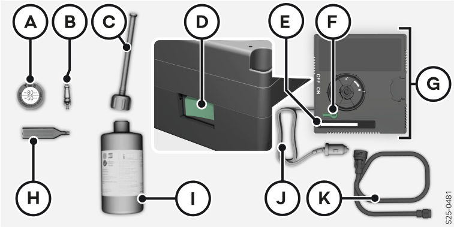
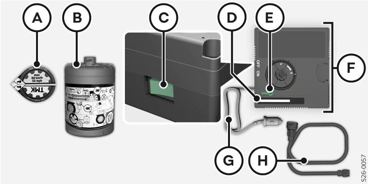

Le kit se trouve dans une boîte sous le plancher de coffre à bagages variable dans le coffre à bagages.
La déclaration de conformité est jointe au compresseur d’air ou au carnet de bord.

Autocollant avec l’indication de vitesse
Embout de valve de rechange
Flexible de remplissage avec obturateurs
Contacteur MARCHE/ARRET
Indicateur de pression
Touche pour la réduction de pression
Compresseur à air (l’agencement des éléments de commande peut différer en fonction du type de compresseur à air)
Visseur/dévisseur d’embout de valve
Flacon de produit de colmatage des pneus
Fiche 12 volts
Flexible de gonflage des pneus

Autocollant avec l’indication de vitesse
Flacon de produit de colmatage des pneus
Contacteur MARCHE/ARRET
Indicateur de pression
Touche pour la réduction de pression
Compresseur à air (l’agencement des éléments de commande peut différer en fonction du type de compresseur à air)
Fiche 12 volts
Flexible de gonflage des pneus